An enterprise face-recognition platform for educational institutions — contactless, session-based attendance built on ASP.NET Core MVC.
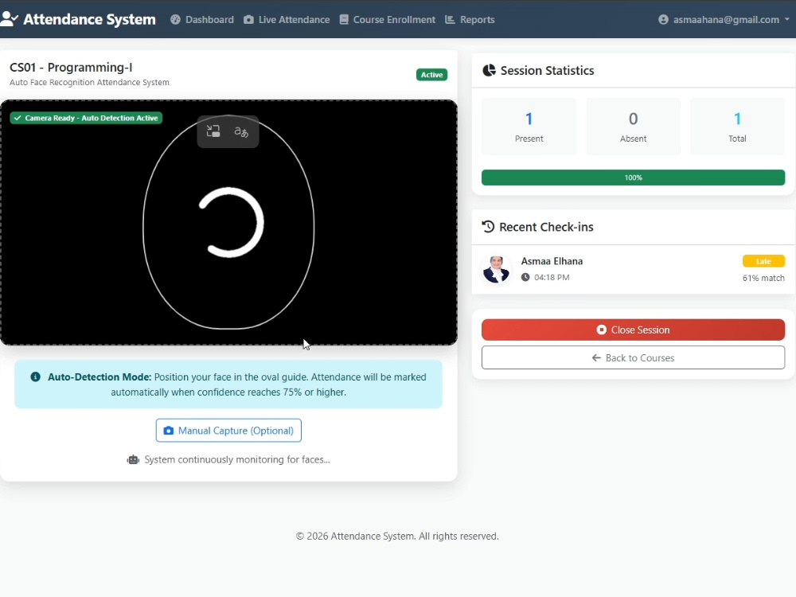
Built on the repository pattern with dependency injection: Controllers and Razor Views sit on a business logic layer of typed repositories (Student, Course, Attendance, Enrollment, Report, FaceReco), which sit on an EF Core / IdentityDbContext data layer over SQL Server. Each concern — recognition, enrollment, reporting — has its own interface and repository, so the recognition engine can change without touching attendance logic.
Admin, Instructor, and Student each see a different slice of the platform. Admins manage users, courses, and every report; instructors run live sessions and see their own course data; students register with a profile photo, self-enroll in courses, and mark their own attendance by face. ASP.NET Core Identity with claims-based authorization and [Authorize(Roles = "...")] guards every sensitive endpoint.
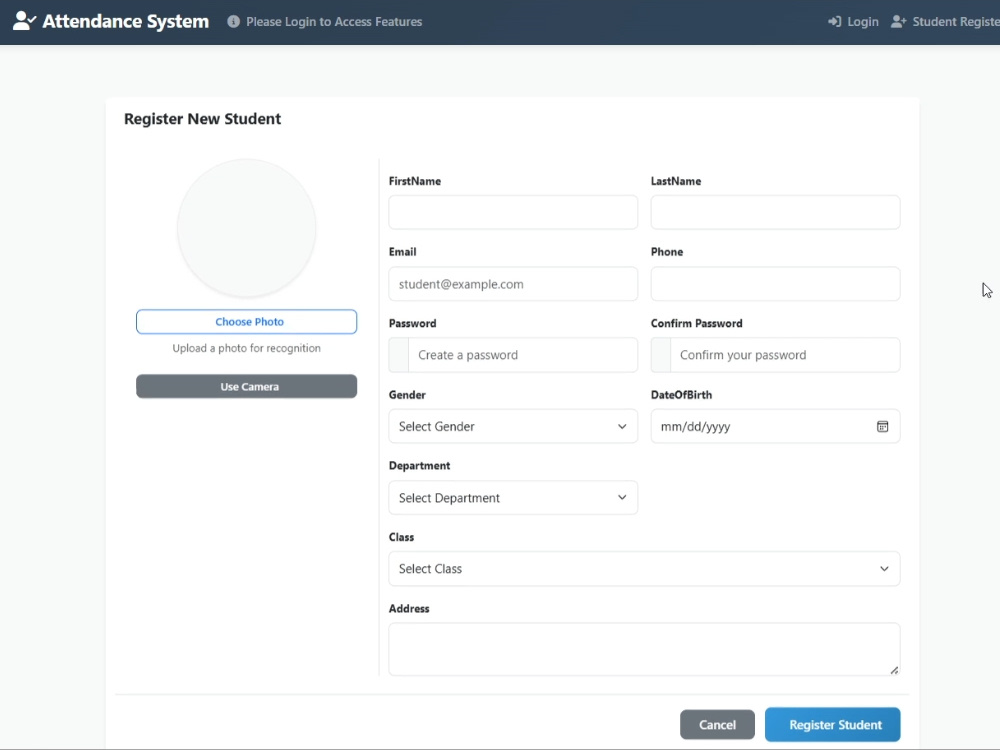
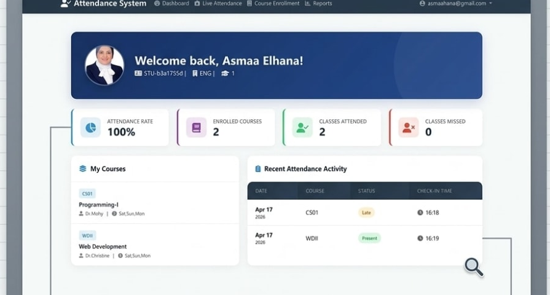
At registration, the uploaded (or captured) profile photo is passed through ExtractFaceEncodingAsync(), which computes a perceptual-hash-style byte-array encoding and stores it against the student in a dedicated FaceEncoding table — decoupled from the profile record so encodings can be regenerated independently.
During a live session, a webcam frame is captured as base64, sanitized, and encoded the same way. That encoding is compared against every active student's stored encoding using mean squared error; the closest match is converted to a confidence score and accepted at a 75% threshold — visible to the user right on the capture screen, so it's clear why a low-confidence match gets rejected instead of silently marked present.
Course Enrollment lists everything a student is signed up for — code, credits, enrollment date — with a single Enroll in New action to browse and join more. Sessions only run for courses a student is actually enrolled in, so recognition and rostering stay consistent.
The Student Attendance Report filters by course and date range and returns present, absent, late counts and an overall attendance rate — the same numbers instructors and admins see, just scoped to one person, so there's no ambiguity about what "100%" means.
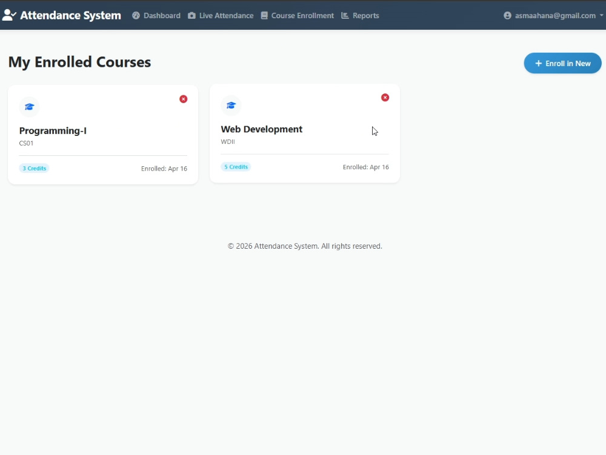
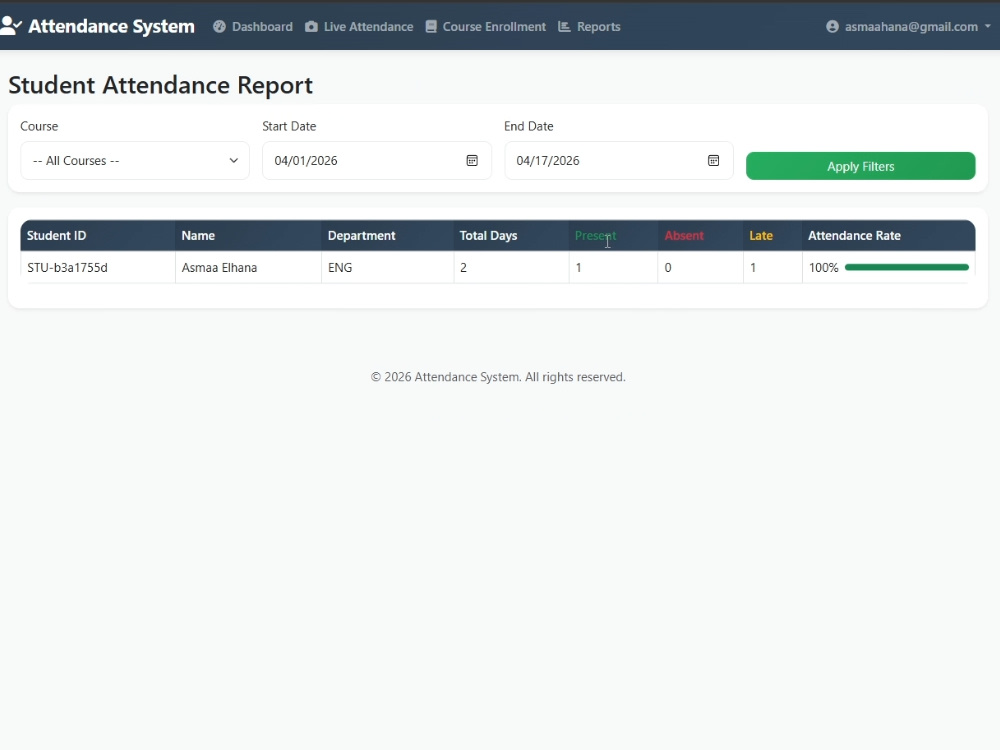
Instructors open an AttendanceSession for a course; every recognized face during that window logs a check-in time against it, with an automatic late flag after a 15-minute grace period. Closing the session locks the record — attendance becomes a real event with a start and end, not just a timestamped list.
Opening a student from the admin side surfaces everything at once — enrolled courses with instructor and schedule, recent attendance with check-in method, and direct actions to edit the profile or mark attendance manually when the camera isn't the right tool for the moment.
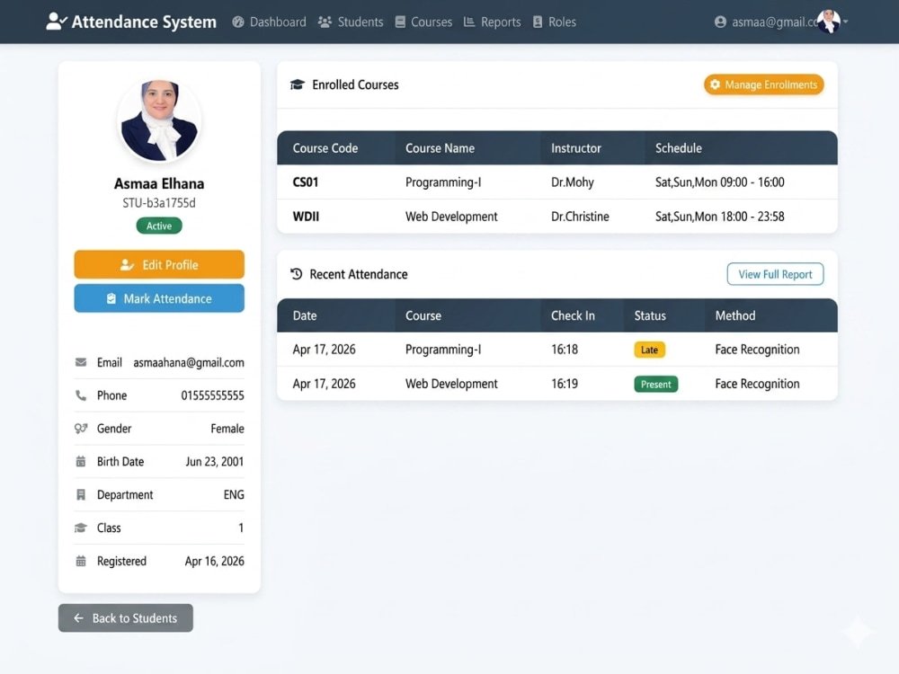
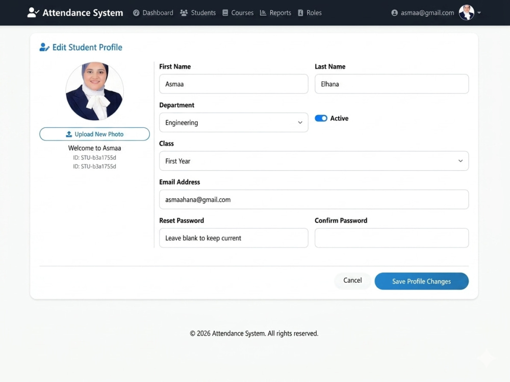
Admins run full CRUD on students and courses — search by name, ID, or email; filter by department; edit, deactivate, or remove records — with each course carrying an instructor, department, credits, and active status.
Course-level monthly trends and day-wise summaries sit alongside the student report, each with its own screen. Every meaningful action — logins, edits, deletions — writes to an AuditLog with user, action, and IP address, so the system stays answerable.
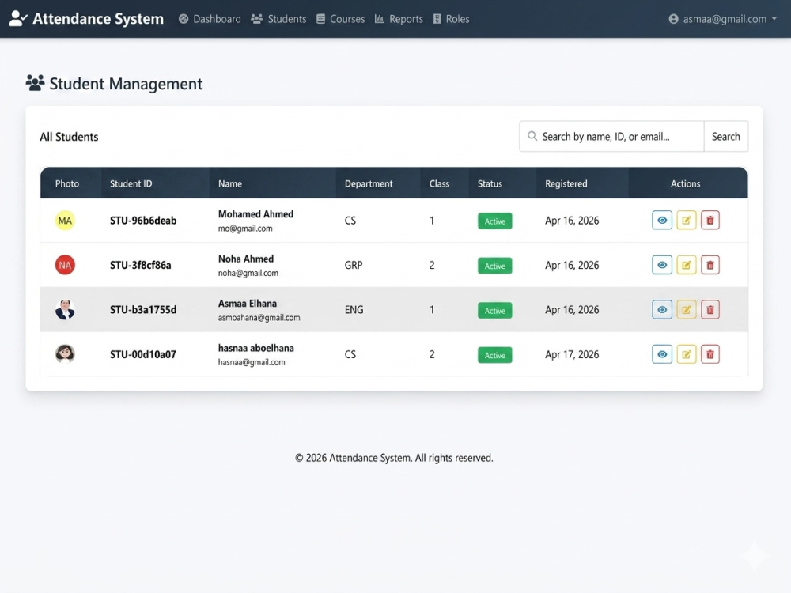
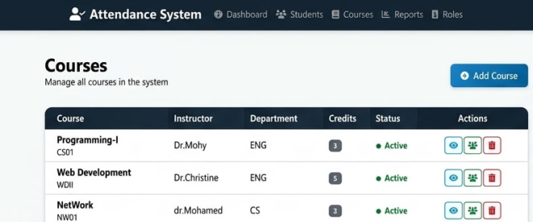
Role-based authorization guards every sensitive controller action, anti-forgery tokens sit on all POST requests, and base64 image data is sanitized and padding-corrected before decoding — ahead of any recognition work.
The administrative dashboard totals students and courses, computes overall attendance, and breaks performance down by department — Computer Science, Graphics & Animation, Engineering — so a shortfall in one department doesn't hide inside a system-wide average.
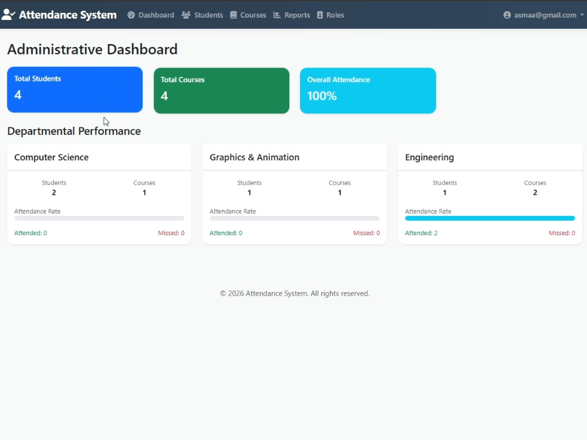
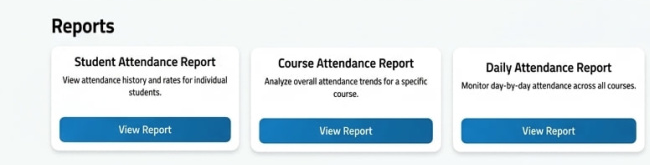